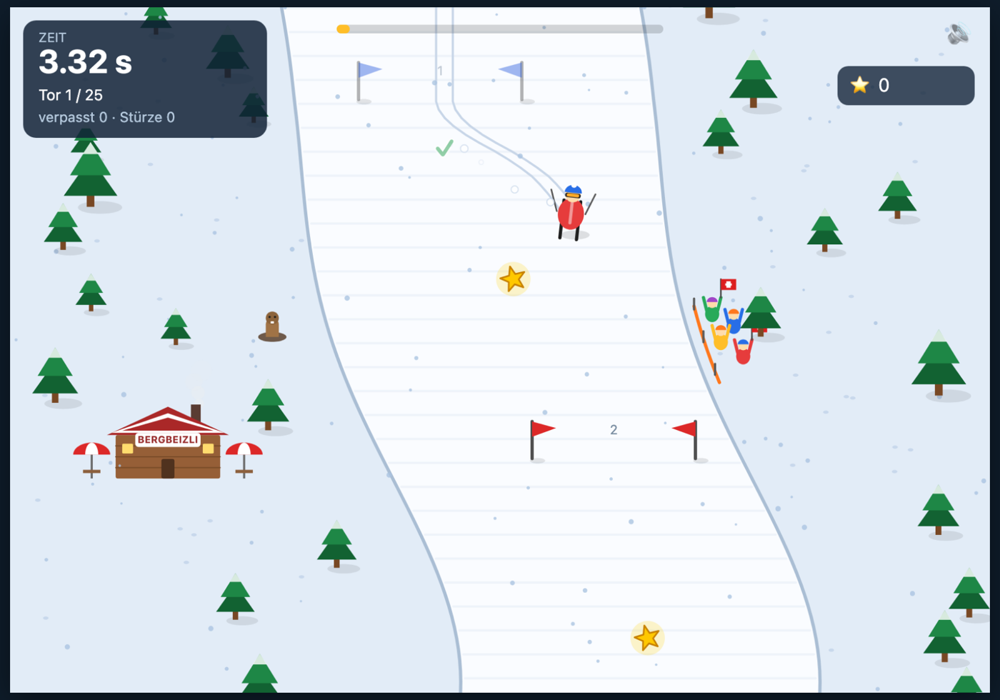

Today you build your own ski race.
You tell the AI what you want. The AI writes the code. You play and check whether it is right.

For trainers
Build a ski game just by describing it
Together we build a ski game – without typing any code ourselves. You describe what should happen, and the AI writes the code.
- Part 1: We get to know the finished base game and tune it with precise prompts – that is your version 1.
- Part 2: You become game designers and build your own variant.
- Rule: We never change a line of code directly – only through prompts.
The 4-step loop in every step
- Read: What exactly are we doing in this step?
- Copy the prompt: Take the prompt from this page and paste it into the chat.
- Check: Try the game in the Live Editor – does it look right?
- Repair: If something is odd → send a small repair prompt.
Remember: The AI is your co-pilot – you plan and you check.
I want … · Don't change … · It is done when …
- I want … The goal in your own words: what should be different, and how much?
- Don't change … The limit: what must stay exactly the same?
- It is done when … How can I tell while playing that it worked?
In Parts 1 and 2 the launcher helps build the sentence with choice buttons; in Part 3 participants write it completely themselves.
Technology & teamwork at the same time
Prompting & thinking like developers
- Describe systems with objects, rules and numbers.
- Set boundaries (“trees only left/right”).
- Test step by step & adjust.
Computational thinking
- Break things down: piste, gates, trees, camera, HUD.
- Abstract: world coordinates vs. screen.
- Set rules & limits → the game becomes predictable.
Social & method
- Explain ideas clearly in the team.
- Plan briefly → prompt → test → adjust.
- Peer feedback: check each other's game with a checklist.
From the finished base game to your version 1
- Step 1 – Play: Load the base game in the Live Editor, do one race, remember your time. Download the file and upload it in the chat.
- Step 2 – Blueprint: The AI explains the three areas: settings, playground, game engine.
- Step 3 – Camera: See further ahead or less far – feel the difference.
- Step 4 – Piste (bonus): A narrower or wider piste.
- Step 5 – Steering: Slippery like ice, or more direct.
- Step 6 – Rules: More or fewer gates, the penalty for missing one.
- Step 7 – Forest (bonus): More or fewer trees, the penalty for crashes.
- Step 8 – Your own course: Your own course and title, set a best time – version 1 is done.
After every step: choose → prompt into the chat → answer into the Live Editor → check “What has changed?” → play. The bonus steps can be skipped if time is short.
Your own sentence + the launcher's frame
If a prompt is too vague, every AI does something different. If it is too technical, you no longer understand what you are telling the AI. So every prompt has two parts:
- Your own sentence: participants choose what they want and add to it freely. They see it as “What you tell the AI”.
- The frame: rules and technical notes for the AI (where it may work, what is off limits). It is collapsed and copied along automatically.
Reliability comes from checking, not prescribing: after every answer the Live Editor checks that the game engine is unchanged and shows in “What has changed?” whether the AI did what was expected. If your own sentence doesn't work, every step has the 🛟 Exact prompt from before.
Working with the tabs
- Overview & plan: Goal, plan, method. This is where you start together as a group.
- Part 1 – Base game: Load the game, understand it and tune it with precise prompts.
- Part 2 – Prompt Studio: Templates & your own ideas – you become game designers.
- Live Editor: Paste the HTML code from the chat and test the game live.
Typical flow: load the base game & upload it in the chat → pick a step → prompt into the chat → copy the HTML → Live Editor.